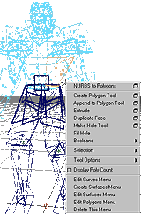

popupEditMenu
Creates a hotkey popup menu in the model panels to access the various edit menus (e.g. Edit Curves, Surfaces, etc.)
Call ‘popupEditMenu’ and the menus are automatically created
and activated.
By default, the menu is configured to activate with a CTRL-RMB click (hold CTRL and press the right mouse button). This can be changed by modifying the options in the line:
string $menu = `popupMenu -p viewPanes -aob 1 -alt 0 -ctl 1 -b 3 tempMM`;
At the bottom of the menu is a list to swap modes. For example if the current menu is Edit Curves, selecting Edit Surfaces Menu will rebuild the menu with the Edit Surfaces functions. You will need to re-click the RMB to access the new menu.